Tune Lustre filesystem striping and MPI-IO aggregation for large-scale parallel writes.
| Factor | Levels | Type | Unit |
|---|---|---|---|
stripe_count | 4, 32 | continuous | |
stripe_size | 1, 16 | continuous | MB |
aggregators | 4, 64 | continuous | |
collective_io | on, off | categorical | |
alignment | 1, 4 | continuous | MB |
Fixed: filesystem=lustre, file_size_gb=100
| Response | Direction | Unit |
|---|---|---|
write_bw | ↑ maximize | GB/s |
read_bw | ↑ maximize | GB/s |
The Fractional Factorial Design produces 8 runs. Each row is one experiment with specific factor settings.
| Run | stripe_count | stripe_size | aggregators | collective_io | alignment |
|---|---|---|---|---|---|
| 1 | 4 | 16 | 64 | on | 1 |
| 2 | 32 | 1 | 4 | on | 1 |
| 3 | 32 | 16 | 4 | off | 1 |
| 4 | 32 | 16 | 64 | off | 4 |
| 5 | 4 | 16 | 4 | on | 4 |
| 6 | 32 | 1 | 64 | on | 4 |
| 7 | 4 | 1 | 4 | off | 4 |
| 8 | 4 | 1 | 64 | off | 1 |
Generated from actual experiment runs.
Pareto Chart
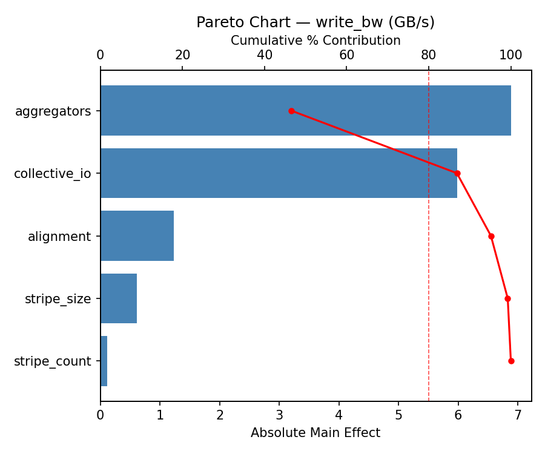
Main Effects Plot
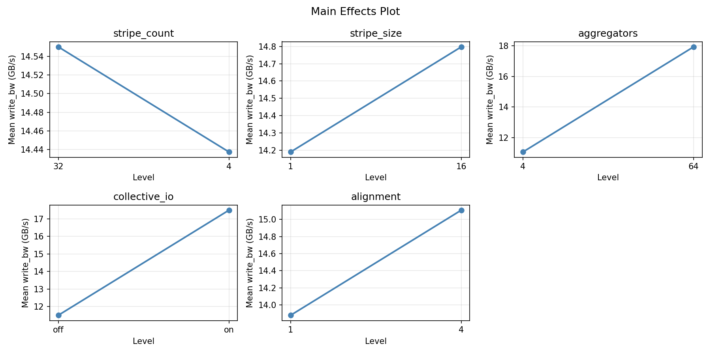
Pareto Chart
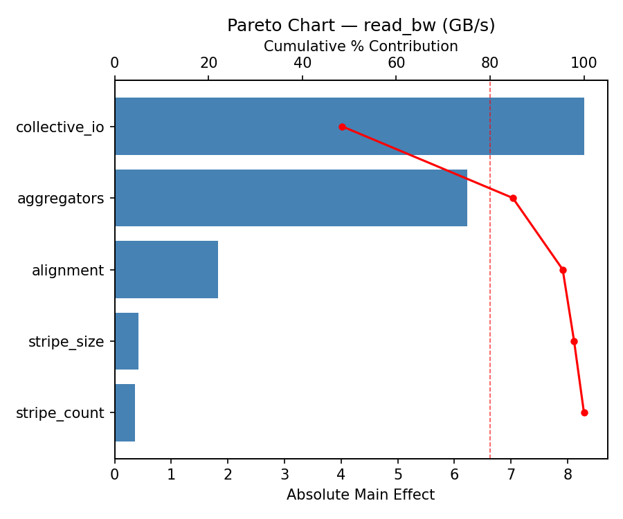
Main Effects Plot
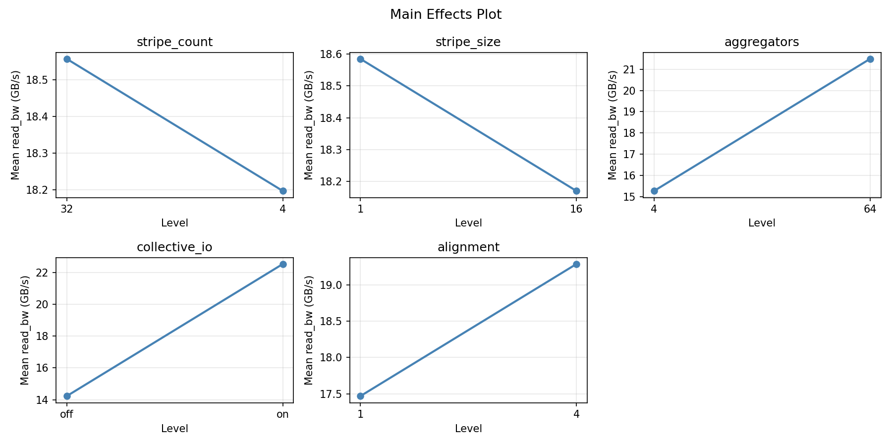
3D surfaces fitted with quadratic RSM. Red dots are observed data points.
Each plot shows predicted response (vertical axis) across two factors while other factors are held at center. Red dots are actual experimental observations.
write_bw (GB/s) — R² = 1.000, Adj R² = 1.000
The model fits well — the surface shape is reliable.
Curvature detected in stripe_count, stripe_size — look for a peak or valley in the surface.
Strongest linear driver: collective_io (decreases write_bw).
Notable interaction: stripe_count × stripe_size — the effect of one depends on the level of the other. Look for a twisted surface.
read_bw (GB/s) — R² = 1.000, Adj R² = 1.000
The model fits well — the surface shape is reliable.
Curvature detected in stripe_count, stripe_size — look for a peak or valley in the surface.
Strongest linear driver: collective_io (decreases read_bw).
Notable interaction: stripe_count × stripe_size — the effect of one depends on the level of the other. Look for a twisted surface.
read: bw aggregators vs alignment
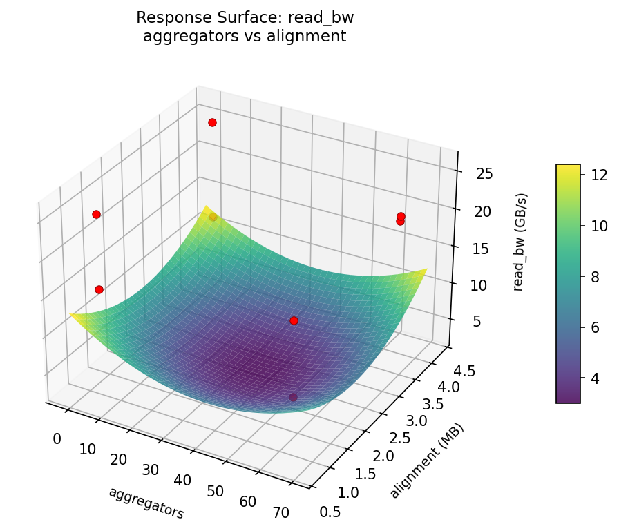
read: bw stripe count vs aggregators
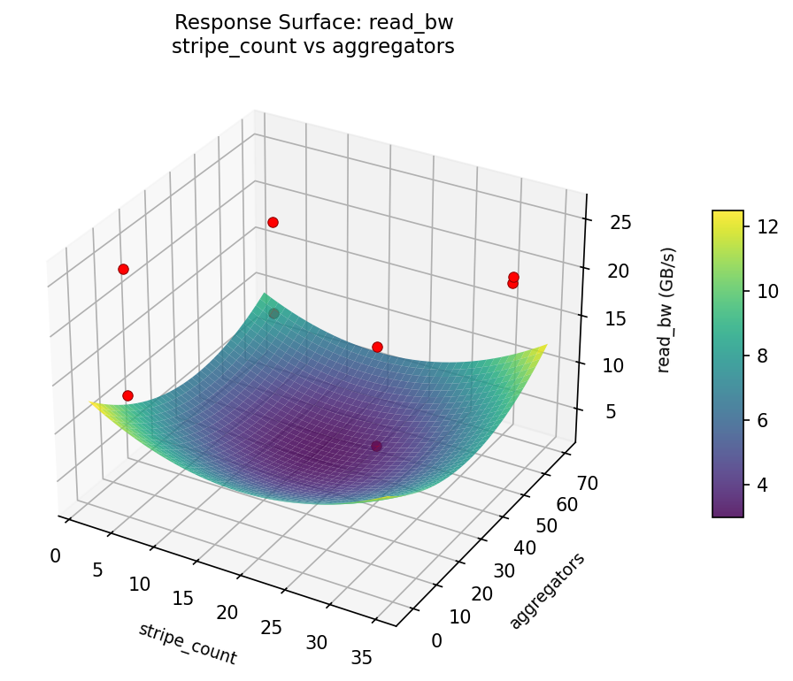
read: bw stripe count vs alignment
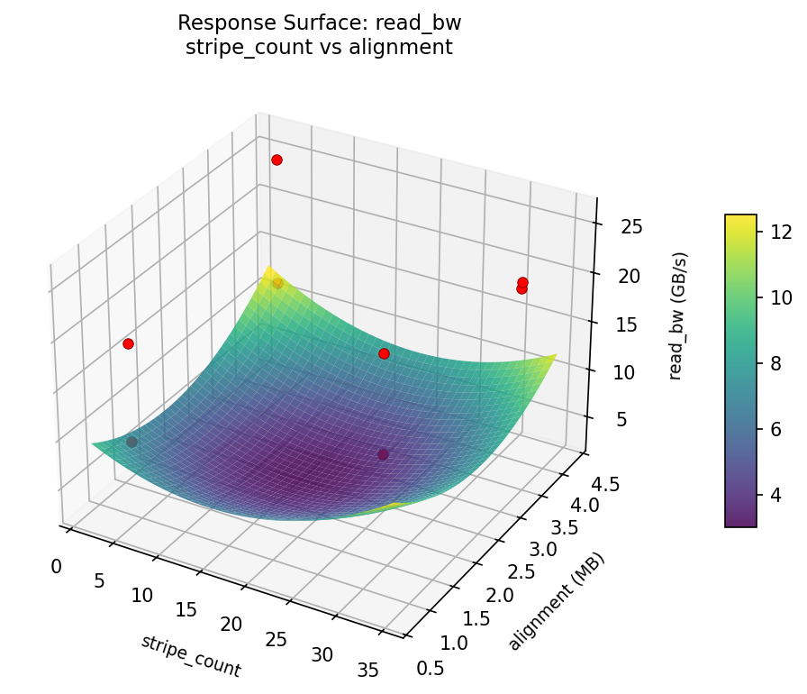
read: bw stripe count vs stripe size
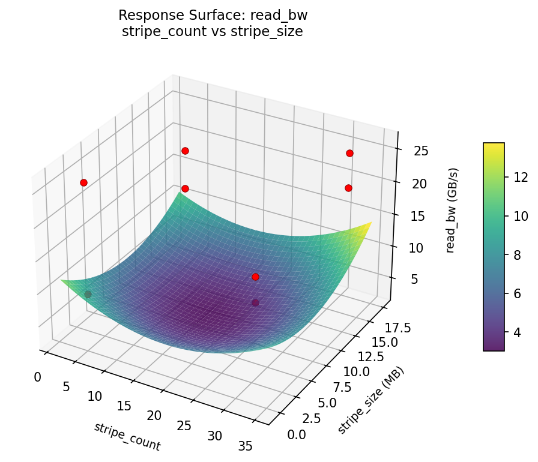
read: bw stripe size vs aggregators
read: bw stripe size vs alignment
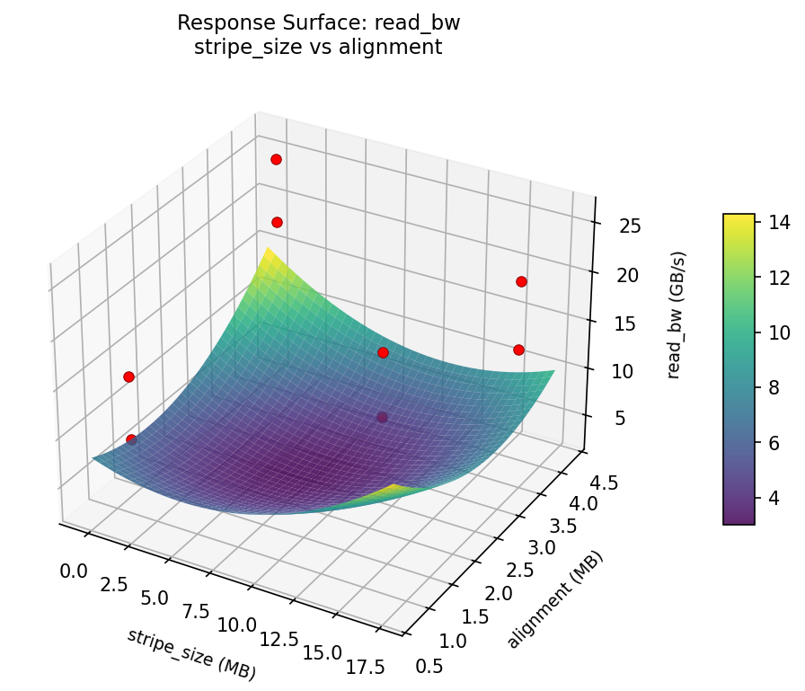
write: bw aggregators vs alignment
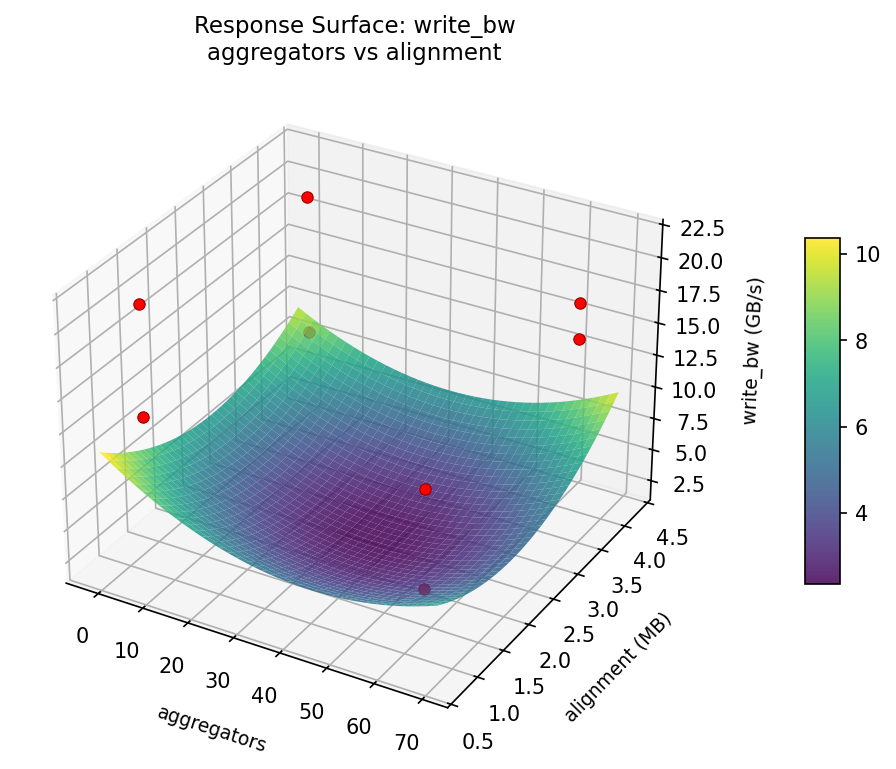
write: bw stripe count vs aggregators
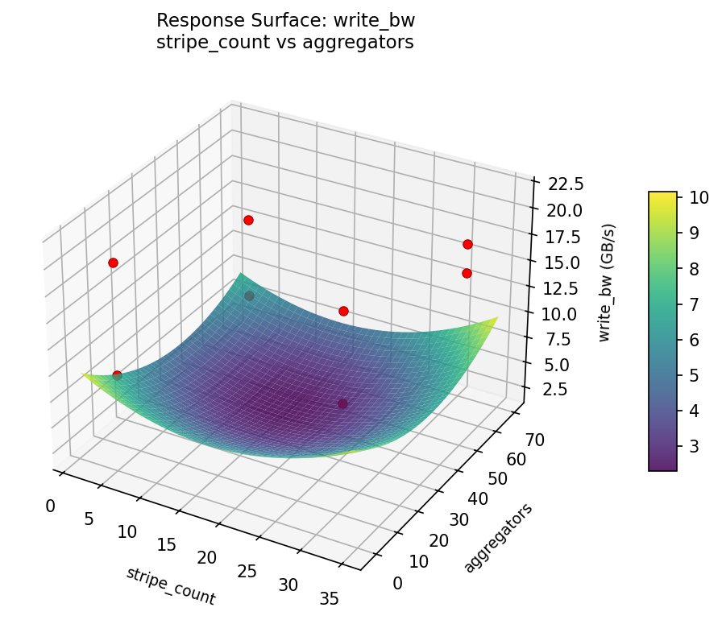
write: bw stripe count vs alignment
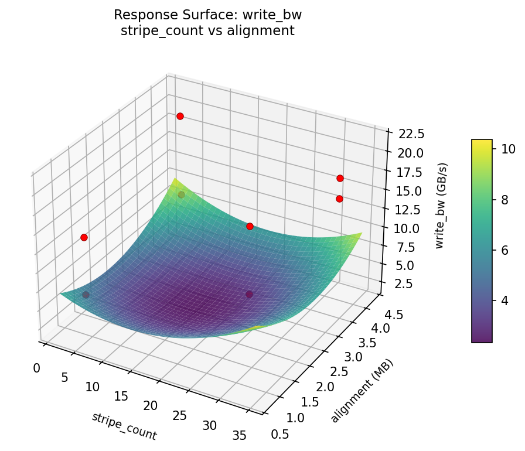
write: bw stripe count vs stripe size
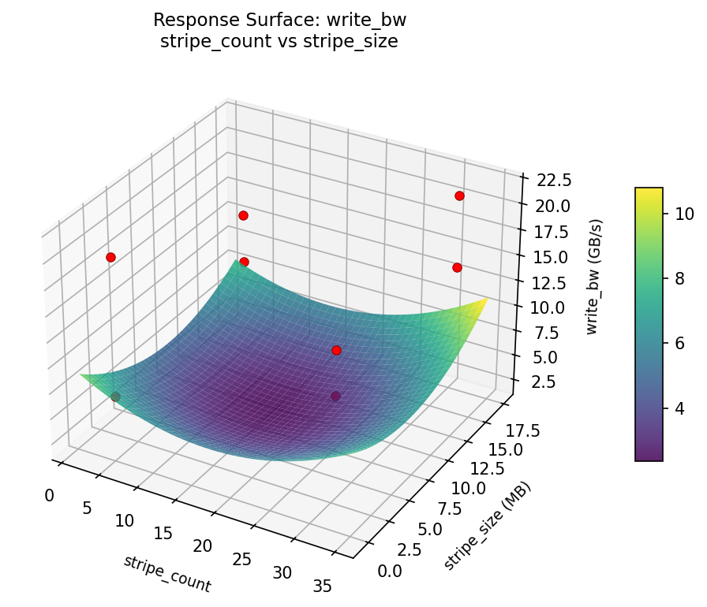
write: bw stripe size vs aggregators
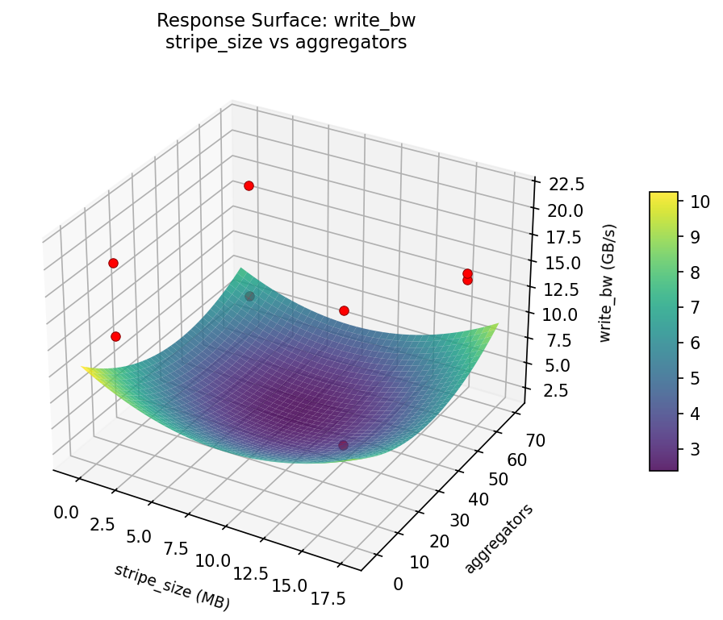
write: bw stripe size vs alignment
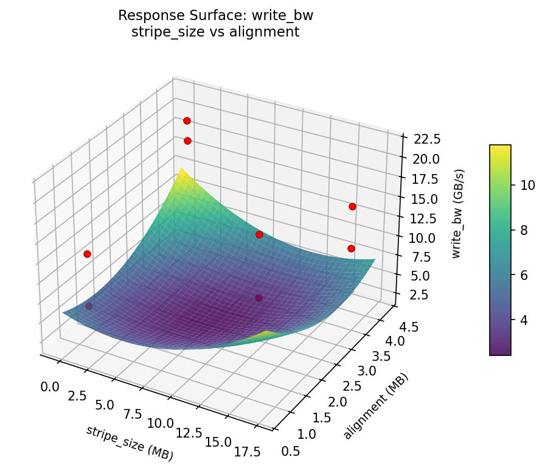